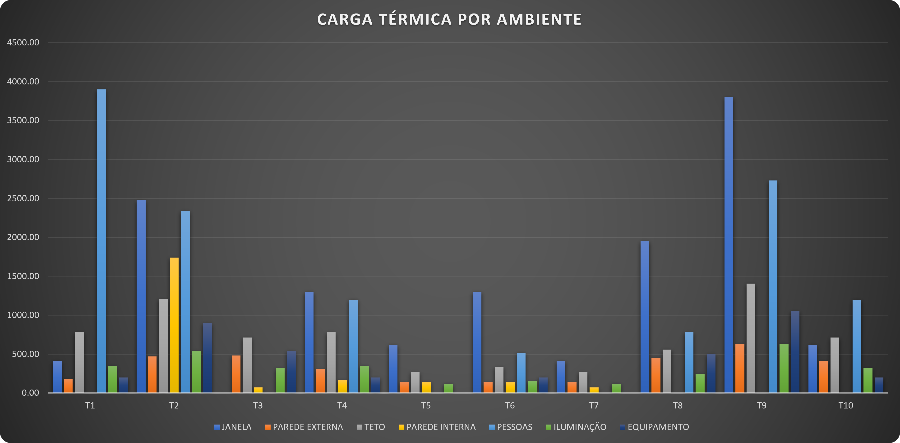
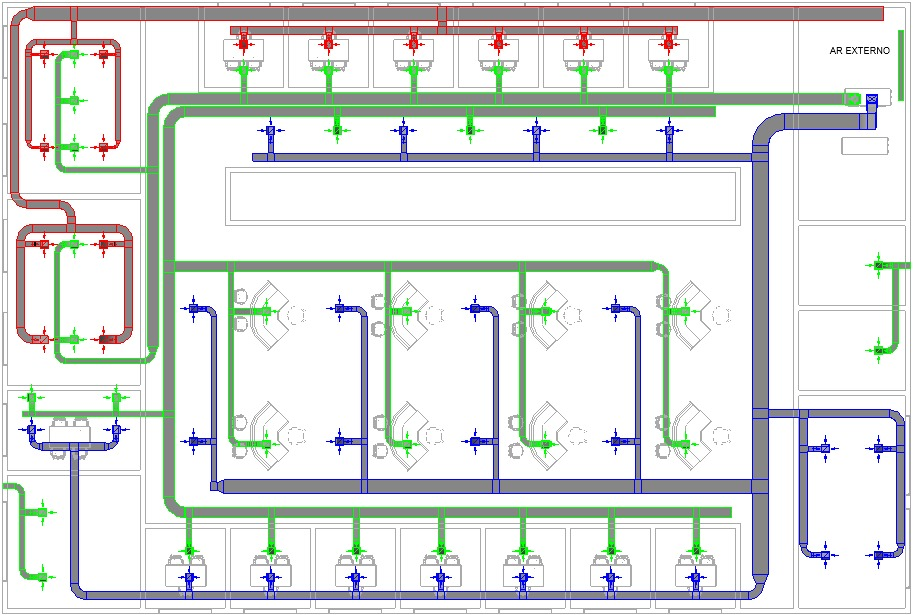

Objetivo
Dimensionar o sistema de climatização de um escritório de advocacia de três pavimentos em Brasília. O trabalho cobre:
- a carga térmica de resfriamento;
- as vazões de insuflamento por zona térmica;
- a seleção de terminais de ar, UTAs (fan-coils) e chiller;
- o diagrama unifilar do sistema AVAC.
Caracterização do edifício
| Item | Valor |
|---|---|
| Pavimentos | 3 (idênticos) |
| Área por pavimento / total | 792 m² / 2.376 m² |
| Pé-direito | 2,70 m |
| Localização | Brasília – DF (lat. ≈ 15° S, altitude ≈ 1.172 m) |
| Fenestração | 40% da área de parede, vidro simples (2 × 4 mm) |
| Zonas térmicas | 11 (T1 a T11) |
Metodologia
- Normas e referências: ABNT NBR 16401 e ASHRAE Handbook – Fundamentals.
- Condições de projeto:
- Externa: TBS 31,2 °C, TBU coincidente 17,9 °C, mês de pico outubro, amplitude 11,2 °C.
- Interna: 24 °C e 50% UR.
- Cargas externas: paredes, cobertura e vidros pelo método CLTD/CLF (DTCT corrigida), com variação horária por fachada entre 8h e 18h.
- Cargas internas: pessoas (75 W sensível + 55 W latente por pessoa), iluminação LED (10 W/m²), equipamentos (150 W por estação de trabalho) e paredes internas adjacentes a espaços não condicionados.
- Insuflamento: balanços de energia no ambiente e na serpentina, mais balanço de massa na caixa de mistura.
- Terminais de ar:
- Rateio da vazão por zona.
- Difusores Trox ADLQ selecionados por efeito Coanda e critério acústico NC ≤ 35.
- Grelhas de retorno GRH com velocidade de face ≤ 2,0 m/s.
- Dutos: método de perda de carga constante (equal friction), com balanceamento por caminho.
Resultados
| Resultado | Valor |
|---|---|
| Carga térmica global, 2º andar (pico às 18h) | 66.276 W (59.731 W sensível + 6.545 W latente) |
| Carga térmica, térreo e 1º andar | 48.992 W |
| Ocupação / iluminação / equipamentos | 15.470 W (119 pessoas) / 7.750 W / 8.890 W |
| Capacidade das serpentinas, 2º andar | 90.207 W ≈ 25,6 TR (2 UTAs) |
| Capacidade das serpentinas, térreo e 1º andar | 74.735 W ≈ 21,25 TR por andar |
| Chiller | Carrier AquaSmart 30EX/EV (modular, R-410A) |
| Filtragem | Dois estágios: G4 + F7 |
| Terminais | Difusores Trox ADLQ tam. 2 a 4; grelhas GRH com v_face entre 1,30 e 1,40 m/s |
Conclusões principais:
- A fachada oeste é a condição crítica: fator solar de 450 W/m² e até 1.950 W por janela. Ela exige atenção especial ao sombreamento.
- A divisão em 2 UTAs por andar reduz a seção dos dutos (preserva o pé-direito do forro), reduz o ruído e permite zoneamento térmico independente.
- Recomenda-se prever dampers e caixas VAV para o controle.


Ferramentas: Revit (modelagem MEP), Excel (memórias de cálculo).